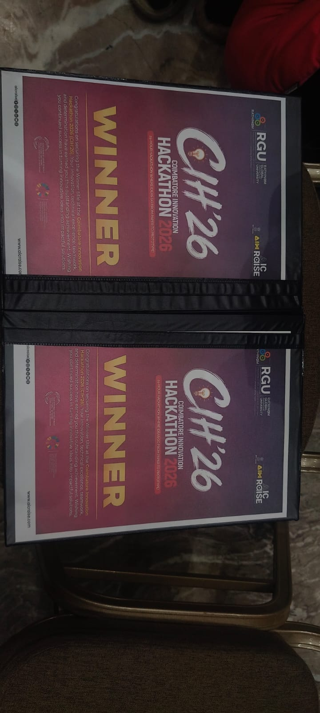
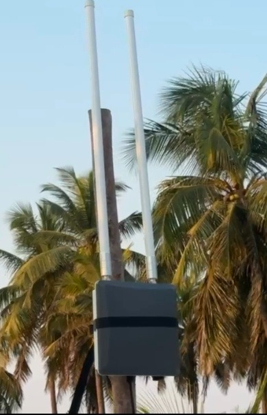

An autonomous, end-to-end forest surveillance and early intervention network developed by the student branch of Sri Sai Ram Engineering College, Chennai, in partnership with EPICS in IEEE, Kenneth Anderson Nature Society (KANS), and the Tamil Nadu Forest Department.
The Mathigiri Forest and Cauvery North Wildlife Sanctuary in Hosur, India represent critical biodiversity corridors along the Eastern and Western Ghats. In recent years, catastrophic ecological events and human-wildlife crises severely threatened both the ecosystem and surrounding rural hamlets.
In January 2020, a devastating midnight forest fire swept across the Cauvery Wildlife Sanctuary. Due to nighttime darkness, rugged terrain, and the total absence of automated detection, the fire spread uncontrollably for hours before forest rangers could identify the blaze. Thousands of square meters of pristine flora and fauna habitat were consumed.
Compounding these fires were grave wildlife intrusions: a leopard repeatedly penetrated rural human settlements, killing 23 domestic animals (cattle, stray dogs, goats) and severely attacking 5 humans. Concurrently, herds of 37 elephants frequently crossed buffer zones, destroying crops and endangering farmers.
Cauvery Wildlife Sanctuary struck by undetected nocturnal fire; severe biodiversity loss.
Leopard attacks 5 villagers, kills 23 animals; 37 elephants trample farm borders.
Poachers exploit remote blind-spots to fell valuable sandalwood and teak trees.
IEEE EPICS awards $6,429 grant to Sri Sai Ram students to deploy autonomous IoT & Edge AI system.
GAIA functions as an interconnected, multi-layered mesh deployed directly in remote wilderness conditions without requiring mains power or wired communication.
Unlike conventional IoT that transmits bandwidth-heavy raw video over cellular, GAIA utilizes lightweight on-device vision intelligence. The machine learning pipeline was trained across four distinct classes:
Trained across 120 epochs using an unbiased 70:30 dataset split, achieving 80.69% accuracy. Saved as best.pt (PyTorch) and compiled into optimized .imx format for zero-overhead inference on Sony IMX AI Camera hardware.
Each distributed node incorporates modular RAK WisBlock peripherals carefully selected for multi-parameter environmental acquisition:
RAK1906 (BME680): Temp, relative humidity, pressure, and gas index.RAK12033 (IIM42652): 6-axis accelerometer & gyro for tree sway & seismic monitoring.RAK12020: Ambient light intensity measurement.RAK12006: Passive Infrared (PIR) motion detection for animal/human intrusion.RAK12015: Vibration disturbance detector for chainsaw/illegal logging detection.RAK12500: u-blox GNSS for precision node geolocation.RAK12023 + RAK12035: Soil moisture and subterranean temperature sensing.RAK12005 + RAK12030: Rain detection system.RAK18001: Buzzer module for audible deterrent and diagnostic testing.
Operating in impenetrable jungle requires uncompromising power efficiency and safety. Kanmanni designed a dual-tier power architecture:
Powered by a 2S LiFePO4 (6V, 6Ah, 32650 cells) pack. LiFePO4 offers ultra-stable voltage discharge (7.2V down to ~5.5V), superior thermal stability in forest fires, 2000+ cycle life, and low internal resistance. Regulated via an MP1584 3A DC-DC buck converter (90–95% efficiency, 5V regulated output) and protected with a 1.5A slow-blow fuse.
Powered by Saft 3.6V 2.6Ah Lithium Thionyl Chloride (Li-SOCl2) non-rechargeable chemistry, featuring negligible self-discharge and wide temperature tolerance for multi-year maintenance-free lifespan, stepped down with XL4015 converters.
Operating in the IN865 Band (India 865–867 MHz) across 16 frequency channels, GAIA solves the notorious forest attenuation issue where foliage absorbs 2.4GHz Wi-Fi and Bluetooth.

Project GAIA was made possible through competitive international funding of $6,429.00 USD from the IEEE Standards Association, an EPICS in IEEE partner.
EPICS in IEEE empowers student branches to collaborate with local non-governmental organizations and governmental authorities, translating cutting-edge academic engineering concepts into tangible community and humanitarian solutions.